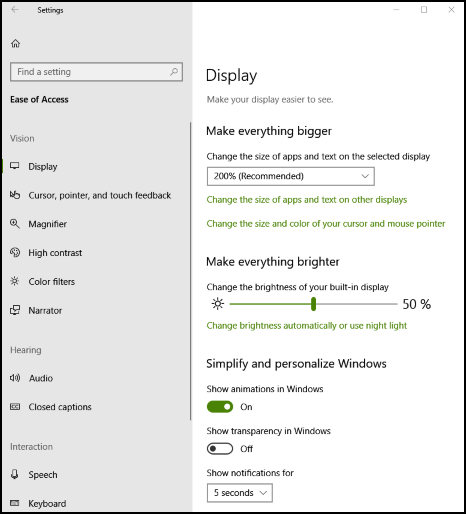

Landmarks and Headings
Landmarks and headings help users of assistive technology (AT) navigate a UI more efficiently by uniquely identifying different sections of a user interface.
Overview
A user interface is typically organized in a visually efficient way, allowing a sighted user to quickly skim for what interests them without having to slow down to read all the content. A screen reader user needs to have this same skimming ability. Marking content as landmarks and headings provides the user of a screen reader the option to skim content similar to the way a sighted user would.
The concepts of ARIA landmarks, ARIA headings, and HTML headings have been used in web content for years to allow faster navigation by screen reader users. Web pages utilize landmarks and headings to make their content more usable by allowing the AT user to quickly get to the large chunk (landmark) and smaller chunk (heading).
Specifically, screen readers have commands allowing users to jump between landmarks and jump between headings (next/previous or specific heading level).
Landmarks enable content to be grouped into various categories such as search, navigation, main content, and so on. Once grouped, the AT user can quickly navigate between the groups. This quick navigation allows the user to skip potentially substantial amounts of content that previously required navigation item by item.
For example, when using a tab panel, consider making it a navigation landmark. When using a search edit box, consider making it a search landmark, and consider setting your main content as a main content landmark.
Whether within a landmark or even outside a landmark, consider annotating sub-elements as headings with logical heading levels.
The Windows Settings app
The following image shows the Ease of Access page in a previous version of the Windows Settings app.

For this page, the search edit box is wrapped within a search landmark, the navigation elements on the left are wrapped within a navigation landmark, and the main content on the right is wrapped within a main content landmark.
Within the navigation landmark there is a main group heading called Ease of Access (heading level 1) with sub-options of Vision, Hearing, and so on (heading level 2). Within the main content, Display is set to heading level 1 with sub-groups such as Make everything bigger set to heading level 2.
The Settings app would be accessible without landmarks and headings, but it becomes much more usable with them. In this case, a user with a screen reader can quickly get to the group (landmark) they're interested in, and from there they can then quickly get to the sub-group (heading).
Usage
Use AutomationProperties.LandmarkTypeProperty to identify the type of landmark for a UI element. This landmark UI element would then encapsulate all the other UI elements relevant to that landmark.
Use AutomationProperties.LocalizedLandmarkTypeProperty to name the landmark. If you select a predefined landmark type, such as main or navigation, these names will be used for the landmark name. However, if you set the landmark type to custom, you must name the landmark through this property (you can also use this property to override the default names from the pre-defined landmark types).
Use AutomationProperties.HeadingLevel to set the UI element as a heading of a specific level from Level1 through Level9.
Use the F6 key and handler to support navigation between landmarks, which is a common pattern in complex apps like File Explorer and Outlook. See Keyboard navigation between application panes with F6 for more guidance.
Examples
See the Code samples for resolving common programmatic accessibility issues in Windows desktop apps to resolve many common programmatic accessibility issues in Windows desktop apps.
These code samples are referenced directly by Microsoft Accessibility Insights for Windows, which can help to identify accessibility issues in your app UI.